<!DOCTYPE html>
<html lang="pt-br">
    <head>
    <meta charset="UTF-8">
    <title>brasil</title>
    <link rel="stylesheet" href="style.css">
    </head>
</html>
<body class="body">
    <section class="ttl">
    <button class="brassil"></button>
    <audio src="brasilsilsil.mp3" id="brasilsil"></audio>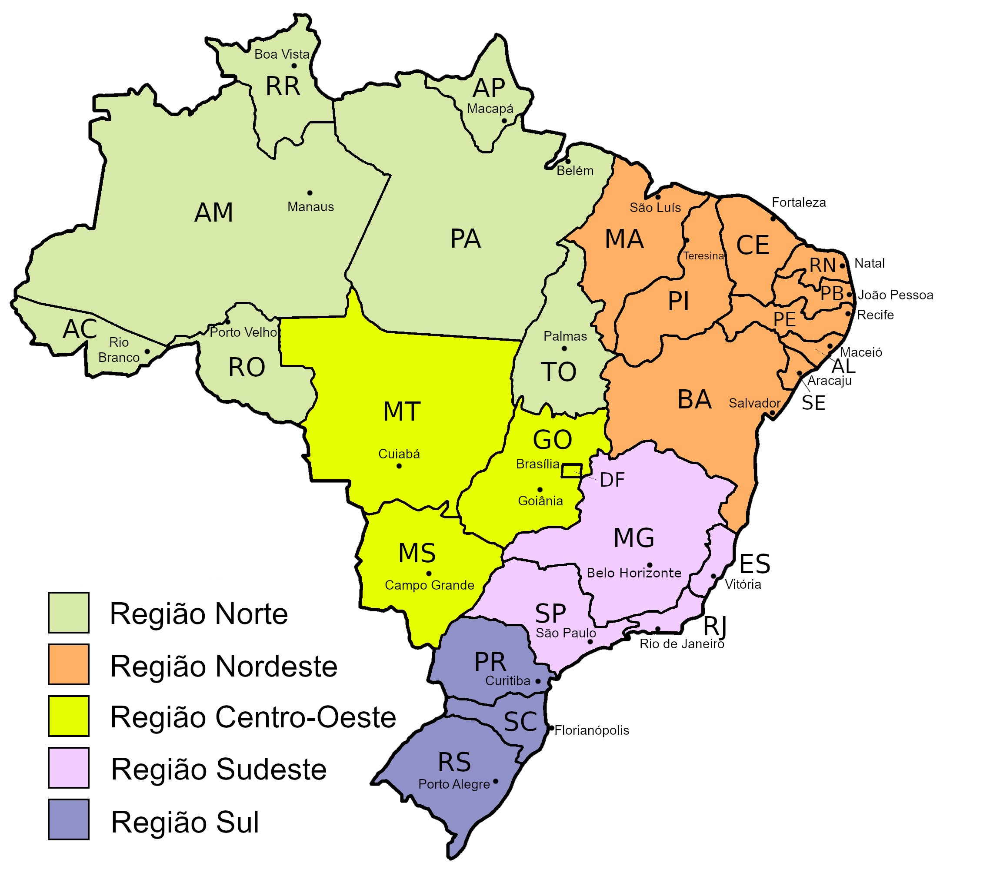
</section>
    <section class="texto">
        <h1>Brasil em geral</h1>
        <p> O Brasil é o unico país da america latina em que o principal idioma falado
             é o português, pelo fato de ele ter sido colonizado pelos 
             portugueses por volta de 1500, ele é o quinto maior país do mundo com uma
              area de 8 510 417,771 km²,  é dividido em 5 regiões, 27 unidades federativas e 5.568 municípios
              , tem uma população estimada em 207 750 291 habitantes, tendo como sua capital a unidade federativa de Brasilia.</p>
            <p> Antes de tudo é certo explicar que antes mesmo da chegada dos colonizadores portugueses e espanhois, 
                  já existiam povos vivendo aqui, que seriam os chamados de indígenas, mas a maneira certa de chamalos é 
                  de povos nativos, pois eles começaram a ser chamados dessa forma por conta de um erro dos portugueses, 
                 porque quando chegaram aqui por volta de 1500 eles vieram já com a ideia de que o local aonde 
                 eles estavam chegando era a Indía, e o motivo disso é porque o portugueses queriam atravessar 
                 o oceano até chegar no local desejado, que seria em busca descobrir e tomar posse de novas terras
                 , mas agora voltando para a história do Brasil, em 09 de Março de 1500 Pedro Álveres Cabral iniciou 
                 oficialmente sua navegação ou viagem junto de duas caravelas e cerca de 1.500 homens, depois em 22 de Abril
                  de 1500, Cabral e sua tripulação avistaram um monte, de longe, e o batizaram de "Monte Pascoal" no litoral sul 
                  da atual Bahia, depois em 1501 começou uma "grande exploração" em busca de recursos, e sem muito 
                  tempo de buscas, encontraram algo valioso na Europa, o Pau-Brasil, um tipo de arvore que tem uma madeira 
                  avermelhada que é muito valiosa para tigir roupas, de 1500 a meados de 1530 os portugueses 
                  por mais que estivessem aqui não estavam tendo um papel tão importante para a coroa portuguesa 
                  poís até o momento eles só descobriram terras e exploraram o Pau-Brasil com a mão de obra de 
                  indígenas escravizados, após 1530 se iniciou mais um marco na história do Brasil, que foi o 
                  Brasil colonial com a implantação de capitanias, em 1530, e terminou com a idependência do Brasil 
                  em 1822, periodo esse marcado pelo ciclo da cana-de-açúcar, do ouro, pela escravidão de indígenas e 
                  africanos e na criação de gado, em 1649 foi data de chegada dos padres jesuitas que foi uma peça chave na
                formação do país tendo o objetivo de disseminar a fé cristã entre os povos indígenas,
                no século XVI e XVII o Brasil se tornou o maior produtor de açúcar de todo o mundo, nessa 
                  época o Brasil também se destacou na produção de tabaco e algudão, após este aumento 
                  notável em que o Brasil se destacou por todo o mundo e sendo referencia na produção de açúcar,
                   este "ciclo do açúcar" começou a entrar em decadencia pelo fim do século XVII, mas a descoberta do 
                   ouro pelos bandeirantes em 1690, no estado de Minas Gerais, atraiu muitos mineiros e comerciantes 
                   para o local fazendo assim o Brasil se destacar novamente de uma maneira mundial.
                </p>
                <h1>Hino naciaonal</h1>
                <p>Em 6 de setembro de 1992 o hino oficial do Brasil foi laçado oficialment, composta por Francisco Manuel em 1822 e escrita por Osório Duque em 1909, clique abaixo e ouça</p>
                <iframe width="1000" height="635" src="https://www.youtube.com/embed/Z7pFwsX6UVc" frameborder="0" allow="accelerometer; autoplay; clipboard-write; encrypted-media; gyroscope; picture-in-picture; web-share" allowfullscreen class="hinov"></iframe>
                <audio controls class="hinoa" src="hino_nacional_brasileiro.mp3" ></audio>
                <h1>Todos os presidentes do Brasil</h1>
                <p>No total até hoje houveram 39 presidentes se fizermos uma lista com cada presidente com seus nomes e tempo de presidencia, ficaria assim:</p>
                <ul>
                    <li>
                       <h3>Deoro da Fonseca</h3><p>1889-1891</p>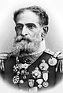
                    </li>
                    <li>
                       <h3>Floriano Peixoto</h3><p>1891-1894</p> 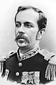                       
                    </li>
                    <li>
                        <h3>Prudente de Morais</h3><p>1894-1898</p>   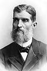                    
                    </li>
                    <li>
                        <h3>Campos Sales</h3><p>1898-1902</p>
                    </li>
                    <li>
                        <h3>Rodrigues Alvez</h3><p>1902-1906</p>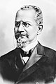
                    </li>
                    <li>
                        <h3>Afonso Pena</h3><p>1906-1909</p>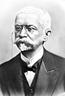
                    </li>
                     <li>
                        <h3>Nilo Peçanha</h3><p>1909-1910</p>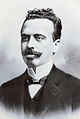
                    </li>
                    <li>
                        <h3>Hermes da Fonseca</h3><p>1910-1914</p>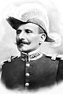
                    </li>
                    <li>
                        <h3>Venceslau Brás</h3><p>1914-1918</p>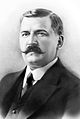
                    </li>
                    <li>
                        <h3>Delfim Moreira</h3><p>1918-1919</p>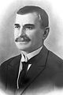
                    </li>
                    <li>
                        <h3>Epitacio Pessoa</h3><p>1919-1922</p>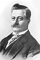
                    </li>
                    <li>
                        <h3>Artur Bernardes</h3><p>1922-1926</p>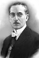
                    </li>
                    <li>
                     <h3>Washington Luís</h3><p>1926-1930</p>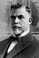
                    </li>
                    <li>
                        <h3>Getúlio Vargas</h3><p>1930-1937</p>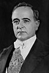
                    </li>
                    <li>
                        <h3>Getúlio Vargas</h3><p>1937-1945</p>
                    </li>
                    <li>
                        <h3>José Linhares</h3><p>1945-1946</p>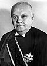
                    </li>
                    <li>
                        <h3>Eurico Gaspar Dutra</h3><p>1945-1951</p>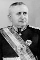
                    </li>
                    <li>
                        <h3>Getúlio Vargas</h3><p>1951-1954</p>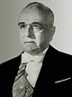
                    </li>
                    <li>
                        <h3>Café Filho</h3><p>1954-1955</p>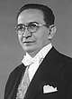
                    </li>
                    <li>
                        <h3>Carlos Luz</h3><p>1955-1955 (3 dias)</p>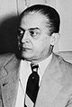
                    </li>
                    <li>
                        <h3>Nereu  Ramos</h3><p>1955-1956</p>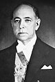
                    </li>
                    <li>
                        <h3>Jucelino Kubtschek</h3><p>1956-1961</p>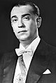
                    </li>
                    <li>
                        <h3>Jânio Quadros</h3><p>1961-1961(201 dias)</p>
                    </li>
                    <li>
                        <h3>Ranieri Mazzilini</h3><p>1961-1961(13 dias)</p>
                    </li>
                    <li>
                        <h3>João Goulart</h3><p>1961-1964</p>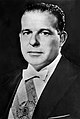
                    </li>
                    <li>
                        <h3>Ranieri Mazzili</h3><p>1964-1964(13 dias)</p>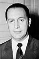
                    </li>
                    <li>
                        <h3>Humberto Castelo Branco</h3><p>1964-1967</p>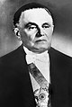
                    </li>
                    <li>
                        <h3>Artur da Costa da Silva</h3><p>1967-1969</p>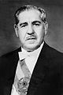
                    </li>
                    <li>
                        <h3>Emílio Garrastzu Médici</h3><p>1969-1974</p>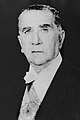
                    </li>
                    <li>
                        <h3>Ernesto Geisel</h3><p>1974-1979</p>
                    </li>
                    <li>
                        <h3>João Figueredo</h3><p>1979-1985</p>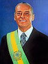
                    </li>
                    <li>
                        <h3>José Sarney</h3><p>1985-1990</p>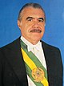
                    </li>
                    <li>
                        <h3>Fernando Collor</h3><p>1990-1992</p>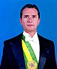
                    </li>
                    <li>
                        <h3>Itamar Franco</h3><p>1992-1995</p>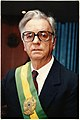
                    </li>
                    <li>
                        <h3>Fernando Henrique Cardoso</h3><p>1995-2003</p>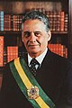
                    </li>
                    <li>
                        <h3>Luiz Inacio Lula da Silva</h3><p>2003-2011</p>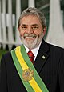
                    </li>
                    <li>
                        <h3>Diumma Roussef</h3><p>2011-2016</p>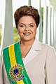
                    </li>
                    <li>
                        <h3>Michel Temmer</h3><p>2016-2019</p>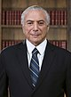
                    </li>
                    <li>
                        <h3>Jair Bolsonaro</h3><p>2019-2023</p>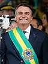
                    </li>
                    <li>
                        <h3>Luiz Inacio Lula da Silva</h3><p>2023-atualidade</p>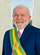
                    </li>
                </ul>
                <h1>Brasil em guerras</h1>
                <p>O Brasil já participou de muitas guerras e confrontos, mas é claro sempre existem as mais relevantes e importante, como um bom exemplo a guerra da Cisplatina que teve grande importcia na formação 
                    do nosso país, poís até 1825 atual territorio do Uruguai era um dos estados do Brasil, mas houve um confronto entre o sul do Brasil e a Cisplatina, com o objetivo de conquistar a independência 
                    a guerra durou até 1828 com a Cisplatina se tornando o país de Uruguai, depois em 1864 se iniciou uma guerra do Paraguai, da Tríplice Aliança (império do Brasil, Argetina e Uruguai)
                     contra o Paraguai, qque ocorreu principalmente pelo presidente do Paraguai com intenção de conquistar territorios da Argentina, mas de quaquer maneira a Argentina perdeu e ganhou uma crise economica
                    ,
                     o Brasil tambem participou da primeira e da segunda guerra mundial mas sem grandes participações foi somente como apoio com os países aliados

                </p>
    </section>
    <section class="titulo">
        <h1 class="ttl">Região Norte</h1>
        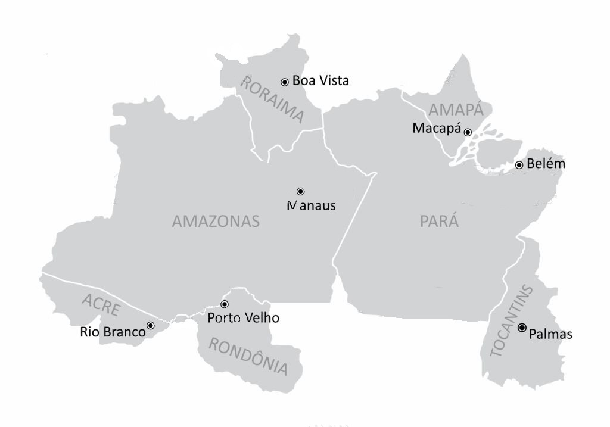
    </section>
    <section class="vg">
        
       <h1>Visão Geral</h1>
       <p>A região norte com 3 853 676,948 km² é a maior dente as outras cinco regiões
        e ocupa 45,25% de todo o territorio Brasileiro, e se fosse um país seria o setimo maior do mundo, sua 
        população também é equivalente a população nacional do Cazaquistão, com 18,6 milhões de habitantes,
        a região também possui os dois maiores estados do Brasil, sendo Amazonas e Pará.
       </p>
       <h1>Historia</h1>
       <p>A região norte foi "descoberta" por volta de 1500 por um navegador espanhol que havia passado pelo "Delta do Amazonas"
         mas não tinha adentrado, depois outro navegador em 1542 decidiu entrar pelas margens do delta mas foi atacado por 
         mulheres indígenas que aparentavam ser amazonas da mitologia grega, por isso o nome, mas depois nos séculos 
         XVII e XVIII os portugueses foram explorando a Amazonia Brasileira.
       </p>
    </section>
    <section class="est">
        <h1 class="borda">Amazonas (AM)  </h1>
        <p>Amazonas é o maior estado do Brasil com 1 559 167,878 km², sendo maior que a França, Suécia, Espanha,
         Mongolia e Grécia, também é maior que o nordeste Brasileiro e é maior que a região sul e sudeste juntas, 
         com 4,2 milhões de habitantes e com 2% da população Brasileira é o segundo maior estado da região norte em 
         população, a capital é Manaus(11 401,092 km²), o estado é atualmente governado pelo Wilson Lima(UNIÃO)
        tem como base economica o setor de serviço seu percentual em PIB é de 2,2%.
        </p>
        <p>Como dito anteriormente um navegador andou pela margem do delta do amazonas mas foi atacado por mulheres 
            indígenas que pelas suas vestimentas aoarentavam ser amazonas da mitologia Grega, por este motivo foi dado o 
            nome do delta de o "Delta dos Amazonas", em 1669 foi fundado em volta de um forte que foi construido pela coroa portuguesa a cidade e capital de Amazonas, Manaus, mais para frente vieram oscolonizdores portugueses em busca 
            de riquezas e etc, mas em XVIII houve um crecimento economico com a exploração da borracha, e assim se iniciou o "ciclo da borracha"(1879-1912), depois houve uma decadencia por volta de 1907 até 1912, mas em 1960 com a construção da BR-319 ligando Porto Velho a Manaus, deu um desenvolvimento a mais para a região e junto disso tambem houve o insentivo a energia eletrica da região.
        </p>
        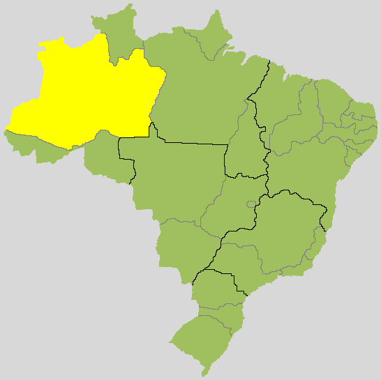
        <h1 class="borda">Rondônia (RO)  </h1>
        <p>Rondônia é um dos 27 estados do Brasil com uma extenção territorial de 237 590,547 km², sua capital é 
            Porto Velho(34 090,954 km²), o estado é dividido por 52 municipios 1 815 278 habitantes, tem um PIB de 0.5%, com a economia 
            baseada no extrativismo vegetal e agropecuaria governado pelo governador Marcos Rocha (UNIÃO) e o 
            vice Sérgio Gonçalves (UNIÃO)
        </p>
        <p>Rondônia se desenvolvel de maneira privada assim como o Acre, a Bolivia(país que faz divisa com o Brasil)
            doou terras ao Brasil e assim o Brasil fundou com essas terras o estado do Acre mas teve de dividilo
            em um certo momento e assim fundando o estado de Rondônia, em 1914 foi fundada pelo governador do Amazonas a cidade e capital de Rondônia, Porto Velho.
        </p>
        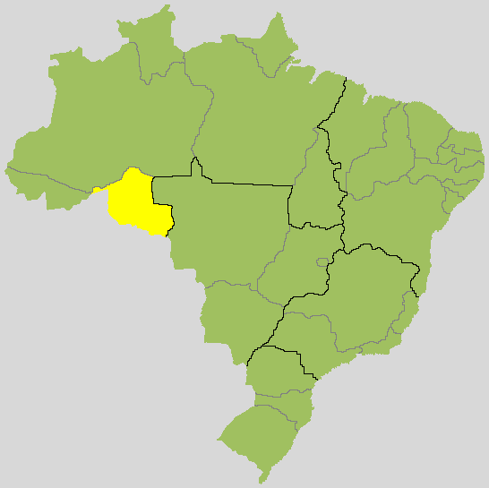
        <h1 class="borda">Amapá (AP)  </h1>
        <p>O Amapá é um dos 7 estados da região norte do Brasil tendo como sua capital o municipio de Macapá,
            o estado tem uma zona territorial de 142 828,521 km² já a capital tem 6 563,849 km², tem uma estimativa 
            populacional de 877 613 habitantes, tem sua economia baseada no extrativismo vegetal e mineral, tem um PIB nacional de 
            0,1% é governado por Clécio Luís (Solidariedade).
        </p>
        <p>1580 a 1640 povos Franceses, Ingleses e Neerlandeses se intereçaram pela a area e extrairam por um bom tempo 
            madeira, oléo vegetal, frutas corante, resinas e muitos produtos de pesca como o peixe-boi entre iutras iguarias,
             mas a ocupação portuguesa só veio a ocorrer no século XVIII poís a coroa portuguesa veio para tentar modernizar 
             o local para de verdade mesmo só para não perdelo pois era um local pouco habitado, depois no século 
             mas o local recebeu atenção na area da agricultura na lavoura do arroz, do algodão, da maniva, do milho e do feijão, a cidade/ capital de Amapá foi fundada em 1738 criada apartir de um destacamento militar.
        </p>
        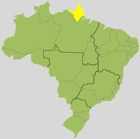
        <h1 class="borda">Pará (PA)  </h1>
        <p>Pará é o segundo maior estado do Brasil com 1 245 870,798 km² e sua capital sendo Belem com 1 059,458 km² 
            Pará é dividido por 144 municipios, com população estimada em 8 777 124 habitantes, a economia é principalmente 
            no extrativismo mineral, trm o PIB atual em 3,5% atualmente governada por Helder Barbalho (MDB).
        </p>
        <p>A história do Pará comça da mesma forma que a do Amazonas, primeiramente o territorio deveria ser 
            da coroa espanhola por isso um navegante passou pelo Rio Amazonas e "descobriu" ele então outro espanhol entrou 
            e foi desbravendo o local, e depois o territorio virou fonte de interesse entre os Francesses, Ingleses, 
            Espanhois e Neerlandeses, por isso antes deles chegarem a coroa portuguesa mandou os bandeirantes para irem 
            se intalando, criando vilas e etc, para que dessa forma o territorio pudesse ser de portugal de maneira mais garantida, em 1616 Francisco Caldeira Castelo Branco, fundou a cidade e capital do Pará Belém.
        </p>
        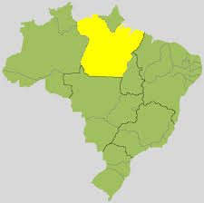
        <h1 class="borda">Roraima (RR)  </h1>
        <p>Roraima tem uma extenção territorial de 224 300,506 km² e 652 713 habitantes, atualmente é governado por	Antonio Denarium(Progressistas), 
            tem como sua capital Boa Vista,(5 687,037 km²) tem como base na sua economia a administração publico, tem um PIB de 0,1%.
             </p>
        <p>No seculoXVI  os colonizadores tanto portugueses quanto espanhois foram explorar a area de Roraima, mas só em 1715 o territorio finalmente se tornou oficialmente do Brasil, até o seculo XIX a região foi praticamente inesplorada por seu terreno desafiador mas neste mesmo seculo houve a descoberta de ouro e diamantes na região, e isso já foi motivo suficiente para a atenção de exploradores e garimpeiros, depois de 1964 a 1985 hpuve a construção da BR-174 que liga Manaus a Boa Vista, e assim ligando-a com todo o resto do país, somente em 1988 Roraima funalmente se tornou um dos 27 estado do Brasil, durante o século XIX foi criada população em volta de uma sede em uma fazenda chamada Boa Vista Rio Branco, então a população foi aumentando, e a fazenda se juntou com a com toda a população se reuniu e formou  a atual cidade e capital  de Roraima, Boa Vista.</p>
        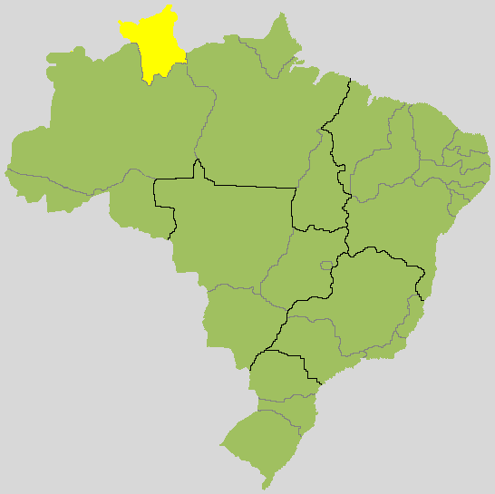
        <h1 class="borda">Tocantins (TO)  </h1>
        <p>Tocantins ocupa uma area de 277 720,520 km² , tem com sua capital o municipio de Palmas(2 218,942 km²), 1 607 363 habitantes
           tem um PIB de 0,3%, tem sua economia baseada na agropecuaria, o estado hoje é governado por Wanderley Barbosa(Republicanos).</p>
        <p>A história pode ser resumida da seguinte forma: os padres jesuitas começaram a se instalar no local 
           para catequisar os povos indígenas, criando assim missões e uma delas e a mais importante e a que seria a atual capital e na época foi chamada de Palma,
            locais e os bandeirantes chegaram e atacaram o local, assim dominando o local 
           e levando os indíos para escravizar, até este momento o territorio ainda pertenciam ao estado de Goiás, mas sem muita 
           demora em 1821 pouco antes da indenpendência do Brasil os portugueses decidiram separar Goiás em dois, retirando 
           assim a região norte de Goiás e a transformando-a no estado de Tocantins.
        </p>
        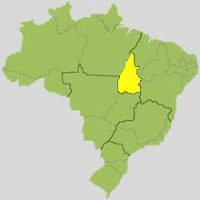
        <h1 class="borda">Acre (AC)  </h1>
        <p>O Acre é uma das 5 unidades federativas do Brasil tem um alcance territorial de 164 123,040 km²
             e sua capital é o municipio de Rio Branco(	8 834,942 km²), tem uma população estimada em 924 000 habitantes, tem como 
             base economica o setor de serviços e o PIB de porcentagem nacional é de 0,1%, é atualmente governado pelo 
             governador Gladson Cameli(PP) e a vice Mailza Gomes(PP).
        </p>
        <p>O Acre é um dos estados mais novos do país ele nem se quer foi conquistado pelos espanhois ou portugueses 
            o Brasil o comprou da Bolivia, e por que o Bolivia vendeu territorio aí atoa? Bom foi pelo simples
         motivo de que hora ou outra haviam invasões de Brasileiros naquele territorio então a Bolivia se cansou disso 
        e simplismente vendeu tal pedaço de terra, e em 1882 foi encontrado um rio, e naquele local era um otimo lulgar para comercio, vendas e feiras então assim foi criada a capital Rio Branco.</p>
        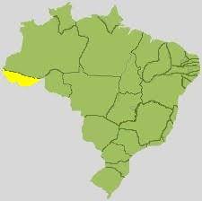
    </section>
    <section class="titulo">
        <h1 class="ttl">Região Nordeste</h1>
        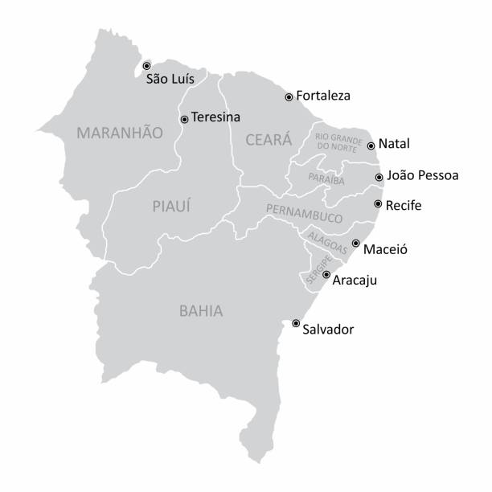
    </section>
    <section class="vg">
        
       <h1>Visão Geral</h1>
       <p>A região nordeste é a terceira maior região do país sendo manor apenas que a região 
        norte e centro oeste, nordeste tem o tamanho equivalante ao do país da Mongolia, com uma area total de 
        1 554 291,744 km², e é o segundo maior em população do Brasil com 56 560 081 habitantes, tem como sua 
        formação algo bem diferente do restante do país poís cada estado, é muito pequeno, e como é uma 
        região muito grande se, quase, todos são pequenos existem varios estados em uma só região, que por um todo 
        são nove(9) estados no total sendo eles Bahia, Sergipe, Rio Grande do Norte, Alagoas, Pernambuco, Paraíba, 
        Ceará, Maranhão e Sergipe.</p>
       <h1>Historia</h1>
       <p>Pedro ALveez Cabral desembarcou no litoral da Bahia tentou comunicação com os indígenas e explorou os recursos, como 
        por exemplo o Pau-Brasil, mas a cada estado sera um pouco mais aprofundada essa história.
       </p>
    </section>
    <section class="est">
        <h1 class="borda">Bahia (BA)  </h1>
        <p>A Bahia dos nove estados do nordeste, com sua capital sendo Salvador(693,442 km²),
         possui 14 985 284 habitantes, tem um alcance 
        territorial de 564 733,177 km², o atual governador é Jerônimo Rodrigues(PT) e o
         vice Geraldo Júnior(MDB) sua 
        economia é baseada no setor de serviços e tem um PIB de relação nacional de 4,1%.</p>
        <p>Em 22 de abril de 1500 Pedro Alveres chegou aqui com suas duas caravelas e logo em poucos anos mais especificamente em 1949 foi fundado Salvador que na epóca foi muito importante, pelo fato de que era a capital do Brasil na época, durante os anos e séculos que iam passando, a Bahia ia se tornando uma grande referencia na lavoura de Cana-de-açúcar.
        </p>
        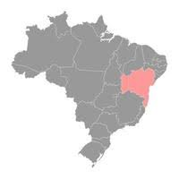 
        <h1 class="borda">Alagoas (AL)  </h1>
        <p>O Alagoas é um dos nove estados do nordeste, com sua capital sendo Maceio(509,552 km²),
            possui 3 365 351 habitantes, tem um alcance 
           territorial de 27 848,140 km², o atual governador é Paulo Dantas(MDB) e o vice Ronaldo Lessa(PDT), sua 
           economia é baseada agricultura e tem um PIB de relação nacional de 0,4%.</p>
        <p>Em 1501 um europeu havia de ter passado por alí mas nem se quer colocou o seus pés no chão mas no século 
            seguinte os franceses vieram por estas terras para explorar o pau-brasil já que pelo oque eles sabiam 
            existia sim resquisios desta madeira nos arredores já que os portugueses estavam se enrriquecendo desta forma 
            com os recursos de territorios proximos, então o donatario de Pernambuco foi em uma expedição ao sul e desbravou 
             novas terras tirando os francesses de lá e tomando e entregando as terras para a coroa portuguesa, e não muito depois eles descobriram um antigo engenho de açucar e um pouco depois teve seu desenvolvimento iniciado com a chegada de navios no porto, e assim fundaram a cidade e capital de Alagoas, Maceio. 
        </p>
        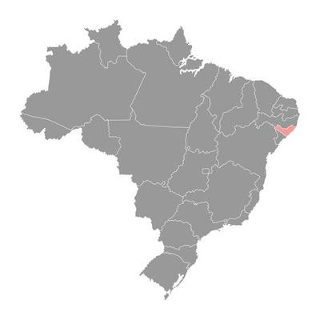
        <h1 class="borda">Ceará (CE)  </h1>
        <p>Ceará é um dos nove estados do nordeste, com sua capital sendo Fortaleza(312,353 km²),
            possui 9 240 580 habitantes, tem um alcance 
           territorial de 148 894,442 km², o atual governador é Elmano de Freitas(PT) e a vice Jade Romero(MDB) sua 
           economia é baseada nos serviços e tem um PIB de relação nacional de 1,9%.</p>
        <p>Em 1590 um fazendeiro queria vender as terras, que seria equivalente a capitania de Ceará então os Francesses 
            que já negociavam com os povos indígenas locais viu a oportunidade e comprou assim sendo u dos primeiros povos 
            europeus a frequentarem o local, mas antes disso quando o fazendeiro já viesse de ter vendido o local e havia de
            ter ido embora aí os padres jesuitas começaram a frenquentar o local, pelo fato de ter povos indígenas 
        ainda não catequizados, depois disso os francesses vieram e construiram meio que um forte, mas depois de um tempo,
     os francesses deixaram o local, e os portugueses vieram para conquistar novas terras e encontraram o forte 
    e assim criaram a capital do estado que seria Fortaleza, por causa do forte que tinha lá.</p>
        
        <h1 class="borda">Maranhão (MA)  </h1>
        <p>O Maranhão é um dos nove estados do nordeste, com sua capital sendo São Luis(582,974 km²),
            possui 7 153 262 habitantes, tem um alcance 
           territorial de 329 651,496 km², o atual governador é Carlos Brandão(PSB) e o vice Felipe Camarão(PT) sua 
           economia é baseada no setor de serviçosos, tem um PIB de relação nacional de 1,2%.</p>
        <p>Os colnizadores portugueses chegaram por volta de 1612, já fundando a cidade de São Luís e que foi evoluindo até ser  a capital que conhecemos hoje, Maranhão foi muito importante economicamente sendo referencia no cultivo de algodão, arroz e açúcar, ele tambem ajudou na indenpendencia do Brasil, ele tambem é muito rico em cultura com eventos como o Bunba meu Boi.
        </p>
        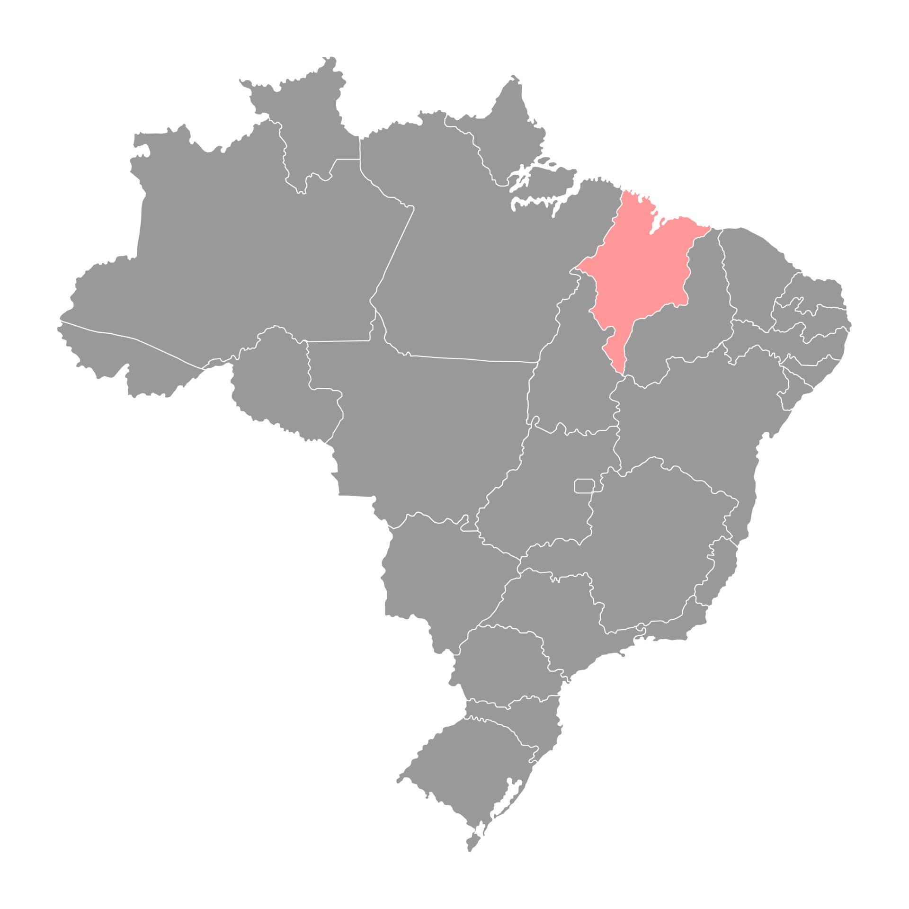
        <h1 class="borda">Paraíba (PB)  </h1>
        <p>A Paraíba é um dos nove estados do nordeste, com sua capital sendo João Pessoa(210,044 km²),
            possui 4 059 905 habitantes, tem um alcance 
           territorial de 56 467,242 km², o atual governador é João Azevedo(PSB) e o vice Lucas Ribeiro(PP) sua 
           economia é baseada na agropecuaria e tem um PIB de relação nacional de 1,7%.</p>
           <p>Paraíba teve sua colonização iniciada no século XVI pelos portugueses, em 1585 foi fundada a cidade de Nossa Senhora das Neves, mas  depois da morte do governador teve seu nome mudado em sua homenagem, e foi para João Pessoa, ele teve uma importancia pequena na economia com o cultivo da Cana-de-açúcar.
           </p>
        
        <h1 class="borda">Piauí (PI)  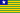</h1>
        <p>O Piauí é um dos nove estados nordestinos, com sua capital sendo Teresina(1 391,981 km²),
            possui 3 289 290 habitantes, tem um alcance  
           territorial de 251 755,485 km², o atual governador é Rafael Fonteles(PT) e o vice Themístocles Filho (MDB) sua 
           economia é baseada na administração publica e tem um PIB de relação nacional de 0,4%.</p>
        <p>Em XVII nobres portugueses, padres jesuitas e indíos escravisados foram para 
            o territorio em busca de grandes pastos para a produção de gado, e realmente foram encontrados grandes pastos, então se estabeleceram, formaram cidades e tudo mais e foi referencia na economia da agopecuaria brasileira, ainda no século XVII um grupo de bandeirantes foi para aquela região, e em 1797 eles ergueram uma igreja e lá se tornou um nucleo urbano com as pessoas se mudando para lá assim se tornando a capitania do Piauí, Teresina.
        </p>
        
        <h1 class="borda">Sergipe (SE)  </h1>
        <p>Sergipe é um dos nove estados do nordeste, com sua capital sendo Aracaju(181,857 km²), possui 2 361 657 habitantes, tem um alcance territorial de 21 915,116 km², o atual governador é Fábio Mitidieri(PSD) e o vice Zezinho Sobral(PDT) sua economia é baseada na extração de minerios e tem um PIB de relação nacional de 0,6%.</p>
        <p>No século XVI os portugueses conseguiram explorar o territorio de Sergipe, em 1590 fundaram a capitania de Sergipe com o nome de Capitania de Sergipe Del Rey, em homenagem ao rio Sergipe e ao rei de portugual, enquanto havia o periodo colonial Sergipe teve sua economia baseada principalmente nas lavouras de cana-de-açucar com a mão de obra escrava, em 1884 Sergipe foi o primeiro estado a abolir a escravidão, 
            a capitania teve seu nome mudado para Aracaju somente em 1837.
        </p>
        

        <h1 class="borda">Rio Grande do Norte (RN)  </h1>
        <p>Rio Grande do Norte é um dos nove estados nordestinos, com sua capital sendo Natal(167,401 km²),
            possui 3 560 903 habitantes, tem um alcance 
           territorial de 52 809,601 km², a atual governadora é Fátima Bezerra(PT) e o vice Walter Alves(MDB) sua 
           economia é baseada no comercio e serviços e tem um PIB de relação nacional de 0,9%.</p>
        <p>Em 1535 foi organizado uma navegação para tentar explorar novas terras na primeira vez deu errado poís o comandante 
            morreu, mas depois os portugueses começaram a se instalar no local e ficaram por mais 3 anos, com o fracasso da outra 
            expedição os francesses foram se intalando no local para poder contrabandiar os recursos, mas em 1596 e 1597 
            ouve a expulção dos francesses do Brasil então a coroa portuguesa descobriu aonde eles estavam e os tiraram
             e assim os portugueses poderiam de maneira mais facil dominar o local e exploram os recursos, em 1599, Natal foi fundado pela intenção espanhola de espulsar os franceses do litoral brasileiro.
        </p>
        
        <h1 class="borda">Pernambuco (PE)  </h1>
        <p>Pernambuco é um dos nove estados do nordeste, com sua capital sendo Recife(218,435 km²),
            possui 9 674 793 habitantes, tem um alcance 
           territorial de 98 149,119 km², a atual governadora é Raquel Lyra(PSDB) e a vice Priscila Krause(Cidadania) sua 
           economia é baseada no comercio e serviços  e tem um PIB de relação nacional de 2,5%.</p>
        <p>1 ano após a chegada dos portugueses ao Brasil, houve o tratado das tordesilhas e então já teria um territorio 
            pré definido e nele já estava o territorio do Pernambuco, mas mesmo eles já tendo o territorio formado ele teriam de 
            explorar todo e qualquer recurso que estivesse pelo caminho de tal exploração, e assim foi passaram 
            fundando vilas deixando plantações, e assim formando o territorio mais ou menos atual, por volta de 1530 houve o encontro da coroa portuguesa(de maneira indireta) com uma estreita faixa de areia protegida por uma linha de arrecifes, e  pelo fato dos arrecifes eles nomearam o local de Recife e o local era quase perfeito para a criação de um porto então o local se tornou muito importante assim se tornando a capital de Pernambuco, entre 1630 até 1654 houve o que hoje em dia é conhecido como a batalha dos Guararapes, que foi uma 
             invasão da Holanda contra, no fim de 1629 os Holandeses sairam de Cabo Verde em direção a Pernambuco
              com 67 navios, conseguiram derrotar a fragil resistência portuguesa no Rio Doce,
               então eles criaram uma colonia dentro de Pernambuco chamada de Nova Holanda tudo no ano de 1630,
               os holandeses então se expalharam e sem muitos esforsos tomaram o municipio de Olinda, e assim o povo 
               em desespero levou tudo o que podiam e foram embora, e assim os holandeses já haviam tomado toda Olinda,
                seu porto e tambem a capital Recife, depois chegou um arquiteto com uma tropa de construtores, para poder fazer 
                contrução da colonia mas depois de um bom tempo o arquiteto base para toda a colonia, foi exonerado do cargo dele 
                assim fazendo muitos holandeses voltarem para os países baixos e dos poucos que sobraram tiveram de enfrentar 
                o povo Pernabucano que se revoltou e voltou para combater os poucos holandeses que sobraram.
        </p>
        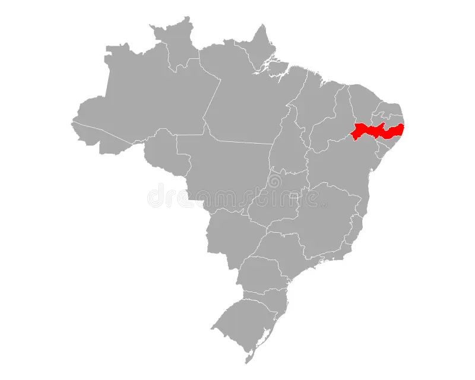
    </section>
    <section class="titulo">
        <h1 class="ttl">Região Centro Oeste</h1>
        
    </section>
    <section class="vg">
       
        <h1>Visão Geral</h1>
       <p>A região Centro Oeste é a segunda maior região do Brasil com 1 606 403,506 km², sendo menor apenas que 
        a região Norte,é a menos populosa tendo uma população estimada 16 085 885 habitantes e
         que tem a segunda menor dencidade populacional sendo de 10,01 habitantes/km²,
         e tambem é a unica em que faz fronteiras com todas as outras, e é a nica também
         que não tem litoral, a região é formada por três estados sendo eles 
        Mato Grosso do Sul (MS), Mato Grosso (MT) e Goiás (GO) e mais o Destrito Federal (DF).</p>
       <h1>Historia</h1>
       <p>A historia do centro oeste por um todo é bem curta podendo ser resumida da seguinte forma, quando os 
        bandeirantes paulistas vieram para explorar novas terras, minerios e indígenas para aprisionar e escravizar,
         eles encontram esta região e criaram vilas, expandiram seus territorios e etc.
       </p>
    </section>
    <section class="est">
        <h1 class="borda">Mato Grosso do Sul  (MS)  </h1>
        <p>Mato Grosso do Sul é umdo estados da região centro oeste que ocupa uma area de 357 145,532 km², sendo dividido por 79 municipios
            , com um tamanho aproximado ao do país inteiro da alemanha, com uma população de 2 839 188, sendo a capital Campo Grande 
            o municipio mais populoso com um alcance territorial de 8 092,951 km²,sua 
            principal fonte de renda é a agropecuaria, seu PIB tem um percentual 
            nacional de 1,6%, o estado é atualmente governado pelo governador Eduardo 
            Riedel(PSDB) e o vice José Carlos Barbosa(Progressistas).
        </p>
        <p>Nas decadas após a gerra do paraguai o Mato Grosso do Sul recebe varios imigrantes 
            tanto do sul quanto do sudeste, que vieram atraídos pela terra fertil, criação de gado e 
            plantações de erva mate, claro que de qualquer maneira sempre, em qualquer lugar do 
            país, recebem imigrantes europeus(espanhois e italianos) e foram formando vilas, mas houve um homem que introduziu o cultivo de importantes plantações como a do café e da cana-de-açúcar, depois em 1872 foi fundada a capital de Mato Grosso do Sul, Campo Grande com a vinda de muito mais paulistas em busca de prosperidade na area da agricultura. 
        </p>
         
        <h1 class="borda">Mato Grosso  (MT)  </h1>
        <p>Mato Grosso é um dos quatro estados da região centro oeste, e ele é mas não deveria 
            ser confundido com "Mato Grosso do Sul" ou até mesmo "Mato Grosso do Norte", o relevo 
            do estado é geralmente formado por planicies, e o estado é geralmente encontrado abaixo do nivel do mar(74%)
            mas o territorio total é de 903 207,050 km², e a capital(Cuiaba) 4 327,45 km², tem uam população estimada em 
            3 567 234 habitantes, o estado é governado pelo governador Mauro Mendes(UNIÃO) e o vice Otavianno Pivetta(Republicanos)
             , tem como base sua economia na agropecuaria com um PIB de porcentagem nacional de 1,5%.
        </p>
        <p>A história pode tanto ser bem resumida quanto aprofundada, vou começar dando um breve resumo sobre o colonização, 
            como arte do acordo com o tratado das tordesilhas os espanhois, mais especificamente os padres jesuitas
         espanhois, vieram para estas terras para fazer oque fazem de melhor, catequizar povos indígenas, e assim foram 
        criando missões, até os bandeirantes da coroa portuguesa encontraram esssas missões e atacaram, para além de conseguir 
    novos territorios para conquistar eles tambem poderiam trazer os indígenas para aprisionar e  escravisalos 
para a mão de obra, e assim ouve um breve confronto, e claro os bandeirantes conseguiram tirar os padres jesuitas de lá 
e conquistar os territorios, um pouco depois quando alguns bandeirantes voltam a capital um outro bandeirante 
 contou ter encontrado ouro na area então mineiros, integrantes da familia real e indíos escravizados foram ao local e relamente havia ouro
 mais ou menos na região de Cuiaba, que recebeu bastante atenção assim se tornando um nucleo e depois a capital, mas por volta de 1750 foi reconhecido que o territorio mato grossence não
  era da familia real portugues pois como estava no combinado no tratado das toresilhas estas terras pertenciam a coroa espanhola mas de qualquer maneira 
portugual conseguiu "ganhar" as terras de volta e aí ja seria como conhecemos hoje em dia.</p>
        
        <h1 class="borda">Goiás  (GO)  </h1>
        <p>Goiás é um dos 27 estados do Brasil com seu alcance territorial de 340 257 km²,dividido por 
            246 municipios, e o maior municipio e capital é Goiania com 728,841 km², o estado tem uma população
         estimada em 7 206 589 habitantes, o atual governador é Ronaldo Caiado(UNIÃO) e o vice Daniel Viela(MDB)
         , a sua economia é baseada no setor de serviços, e o PIB atual na media nacional é de 2,7%.</p>
        <p>Goiás havia de ter ficado em destaque poís após o encontro de ouro e outras pedras preciosas aos resdores 
            do estado, como Minas Gerais  e Mato Grosso, então por um bom tempo estava se acreditando que naquela 
            area as pedras presiosas e o ouro eram muito abundantes na região, mas tudo não se passava de crenças 
            e só serviu para destacar Goiás durante um curto periodo de tempo, em 1722 o Brasil era muito diferente de 
            hoje em dia, somente o estado de São Paulo ocupava toda a região Centro Oeste atual, mas de qualquer forma 
            tudo se separou, não ficou exatamente como é hoje em dia, mas cada vez mais foi se aproximando do que conhecemos hoje, depois em 1935 com a ultilização de territorios extintos e desmembramento de outros municipios foi fundado a capital de Goías, Goiania. 
                </p>
        
        <h1 class="borda">Distrito Federal  (DF)  </h1>
        <p>O Distrito Federal é o unico estado do Brasil que não possui municipios, ele é somente dividido por 35 
            unidades administrativas, com area de 5 760,784 km², ele quase não faz divisa com nehnum outro estado 
            a não ser Goiás, mas ele faz faz uma pequena divisa com menos de dois quilometros com Minas Gerais, tem como 
            sua capital Brasilia que também é a capital do Brasil, tem uma população aproximada em 	3 094 325 habitantes,
            o estado é atualmente governado por Ibaneis Rocha(MDB) e a vice Celina Leão(PP), sua economia é baseada 
            principalmente no setor de serviços, com a porcentagem do PIB nacional sendo de 0,7%.
        </p>
        <p>O Brasil após já ter trocado de capital duas vezes sendo a primeira indo para Salvador, Bahia, e depois saindo dali 
            e indo a Rio de Janeiro, então a familia imperial pensou que o melhor local para se ter uma capital 
            seria para o interior, um local aonde seria distante de qualquer contato litoranio poís caso ouvesse qualquer 
            tipo de invasão estrangeira, ela provavelmente viria pelo litoral e teria que ultrapassar todo o país para chegar 
            a capital que é o local mais importante para deixar seguro, então daria tempo das tropas pararem a invasão 
            antes de chegar a capital, então em 1823 foi inaugurada oficialmente a mais nova capital do Brasil, Brasilia.
        </p>
        
    </section>
    <section class="titulo">
       
        <h1 class="ttl">Região Sudeste</h1>
        
        </section>
        <section class="vg">
           
           <h1>Visão Geral</h1>
           <p>A região sudeste do Brasil é a segunda menor região do país, com 924 620,678 km², sendo maior apenas que 
            a região sul, além de ser a região mais bem desenvolvida do país, sendo responsal por 55,2% do PIB Brasileiro,
            e tambem é o maior em população no país com uma população estimada em 89 632 912 habitantes e usa 
            85% de toda a energia eletrica ultilizada no país é variado em questão de clima,
            tendo climas tanto tropicais quanto subtropicais.
           </p>
           <h1>Historia</h1>
           <p>Os primeiros habitantes da região sudeste foram os povos indígenas, mas logo chegaram os Portugueses 
            e exploraram principalmente o Pau Brasil(que principalmente era usado para tingir roupas) que era muito 
            encontrados no litoral sudeste, assim os portugueses começaram a se estabelecer na região criando assim
            a vila de São Paulo, então os moradores dessa vila entraram pelo interior em busca de aprisionar e 
            escravisar indígenas, e nessas explorações os bandeirantes paulistas encontraram um local com abundancia em
            ouro que seria a atual Minas Gerais, e assim a população foi crescendo e a atenção para o local foi aumentando
            da mesma maneira, logo após isso ouve o famoso ciclo do ouro com uma maior atenção ainda ao estado de Minas Gerais.</p>
        </section>
        <section class="est">
            <h1 class="borda">São Paulo (SP)  </h1>
            <p>São Paulo é dividido por 645 municipios no total, sendo um deles, obviamente, a capital que é São Paulo(com territorial de 1 521,110 km²),
             o alcance territorial tem um total de 248 219,481 km², com uma população estimada em 12 396 372 habitantes, o PIB paulista esta á 31,2% sendo o maior de todo 
             o país, com a ecônomia sendo baseada(principalmente) na industria, todo o estado esta sendo governado pelo 
             governador Tarcísio de Freitas (Republicanos) e o vice-governador 	Felicio Ramuth (PSD)
            </p>
            <p>Antes de que os colonizadores chegassem já viviam povos indígenas, mas depois com a chegada dos colonizadores 
                Portugueses, que fundaram o estado denominado como São Paulo dos Campos de Piratininga e que muito mais para 
                frente seria a atual capital de São Paulo, então os padres jesuitas fundaram uma escola, no local aonde hoje
                seria a atual capital de São Paulo, na intenção de catequizar os indígenas, mas no dia o qual a 
                escola foi fundada era o mesmo do qual era comemorado a conversão do apóstolo Paulo de Tarso, ou São
                 Paulo, então já seria mudado para somente São Paulo como conhecemos hoje a capital, se apassaram 
                 dois séculos e a vila de São Paulo ficou isolada pois ficava muito para o interior, então se 
                 criou um grupo de pessoas que iam atrás de minerios, indígenas para aprisionar e escravisar e ir 
                 em busca de escravos fugitivos, eles eram e são conhecidos então como os famosos bandeirantes, 
                 então eles saiam nessas expedições seguindo o rio e criando trilhas aonde seriam criadas cidades em cima delas
                  mas tambem eram muito conhecidos tambem pela captura de indígenas para escravisar nas missões jesuitas 
                  que eram vilas criadas pekos padres jesuitas para abrigar e catequizar os povos indígenas, os bandeirantes 
                  paulistas tambem "ajudaram" a descobrir e explorar um dos mais importantes estados para a história do Brasil 
                  que foi Minas Gerais.
            </p>
             
            <h1 class="borda">Minas Gerais (MG)  </h1>
            <p>Minas Gerais é dividido por 852 municipios mais a capital que é Belo Horizonte(com area de 331,354 km²), com uma população estimada em 
             21 411 923 habitantes, e tambem é o quarto maior estado do país com uma area territorial aquivalente a 586 522,122 km², 
             o PIB atual de Minas Gerais é de 9% sendo o terceiro maior o país, o estado atualmente é governado pelo 
            governador Romeo Zema(NOVO) e pelo vice-governador Mateus Simões(NOVO), e sua economia é baseada no agronegôcio</p>
            <p>Na história de Minas Gerais, quase tudo, ou grade parte dela é principalmente focada na explorações dos europeus
                na exploração das pedras preciosas encontradas no estado, como simplesmente o resto de todo o país antes dos 
                colonizadores chegarem aqui já haviam povos indígenas vivendo aqui, quando os europeus chegaram se iniciou um marco 
                histórico chamado de "A Corrida do Ouro", como o nome já diz foi um momento o qual Minas Gerais foi descoberto 
                e com ele, toda a abundância em pedras preciosas, e a principal como o nome já diz foi o ouro, os espanhois foram os 
                primeiros, que saiu pelo litoral da Bahia indo até o norte de Minas Gerais, após isso foram sendo criadas 
                "entradas" que seria como os caminhos que os bandeirantes faziam para criar trilhas e abrir caminho.
                 Em XVI os bandeirantes foram mandados pela coroa portuguesa, pois dito e feito, eles percorreram por quase 
                 todo o estado em busca de pedras preciosas e aprisionar e escravizar indígenas, então um bandeirante
                 encontrou uma jazida de ouro, e logo depois disso o territorio de onde hoje é Minas Gerais começou a
                 ser ocupado por bandeirantes para minerar, a noticia se espalhou e então o local se tornou um núcleo
                 aonde as pessoas mineravam e comercializavam, não demorou muito para que nesse processo fossem 
                criadas vilas, e logo, juntamente das outras seria criado a capitania de Minas Gerais, mas tudo tem 
                um fim, e com isso não foi diferente, as jazidas começaram a se esvaziar e logo os mineiros 
                e comercializantes não teriam mais objetivo de ficar por alí, então Minas Gerais deixou de ser um dos 
                maiores núcleos do país para ser somente mais um dos estados do Brasil, depois em 1750 foi criado o destrito de Nossa Senhora da Boa Viagem do Curral del Rey, e depois teve seu nome mudado para Belo Horizonte em 1890, em 1893 passou de distrito para cidade e depois para a capital de Minas Gerais.</p>
            
            <h1 class="borda">Rio de Janeiro (RJ)  </h1>
            <p>Rio de Janeiro ocupa 43 750,425 km² de espaço na regiao sudeste, e uma população estimada em 17 463 349 habitantes,
                e todo o estado é dividido por 92 municipios, sendo a capital Rio de Janeiro com alcance de 1 200,329 km², ele é governado pelo governador Cláudio Castro(PL) e o 
                vice-governador Thiago Pampolha (UNIÃO), o atual PIB é de 9,9% sendo o segundo melhor do país, e tem 
                a economia baseada no setor de trabalho.
            </p>
            <p>o Rio de Janeiro tem uma grande importancia na formação do nosso país, pois a  
             familia imperial se mudou para o Rio de Janeiro(cidade) e lo após isso o local se tornou a 
             "Capitania Real do Rio de Janeiro", depois a pecuaria e a lavoura de cana-de-açúcar tiveram um aumento 
            consideravel no século XVI, e isso se tornou quase definitivo quando o porto(o porto do Rio de Janeiro)
             começou a receber ouro das jazidas de Minas Gerais, mas de qualquer forma a capital do Rio deixou de ser 
            a "capital do Brasil" e se tornou somente a capital do Rio de Janeiro.</p>
            
            <h1 class="borda">Espirito Santo (ES)  </h1>
            <p>Espirito Santo é um dos estados da região sul do país, dividido por 78 municipios
                sendo um deles a capital Vitória(96,536 km²), tem um alcance trritorial de 46 095,583 km², e uma população estimada 
                em 4 108 508 habitantes, o estado que atualmente é governado pelo governador Renato Casagrande(PSB) 
                e o vice-governador Ricardo Ferraço(PSDB), tem um PIB de 2,9%,com sua economia sendo baseada em petroleo
             gás sendo o segundo maior do país nessa area.</p>
            <p>A Historia de Espirito Santo começa com o fidalgo português Vasco Fernandes Coutinho, avistou as terras 
                num domingo de Espirito Santo, e mandou chamarem de Espirito Santo a proxima vila formada lá, e mandou 
                que a construissem com as seguintes especificações: aonde coubesse cinquenta léguas de costa, entre os rios 
                Murici e Itapemirim, com outro tanto de largo, sertão a dentro, a partir do ponto em que determinava
                , ao norte, o quinnhão concedido a Pero de Campos Tourinhos, donátario da capitania de Porto Seguro. 
                 Assim no novo governo donatario, eles tentaram se desenvolver nas lavouras mas consiguiram somente 
                 tentativas frustadas então tentaram vender a capitania que na época já era a atual que é Vitória, 
                 mas eles encontraram um motivo bem mais lucrativo que foi o descobrimento das "Pedras Verdes"-esmeraldas 
                 essa busca começara por iniciativa do governo geral, mas foi muito irrelevante, e depois os portugueses na hora de criar a capital para o Espirito Santo, quis melhor segurança para a população assim crindo a capital em uma ilha, dessa forma foi criado a capital do Espirito Santo, Vitoria.
            </p>
            
        </section>
        <section class="titulo">
            <h1 class="ttl">Região sul do Brasil</h1>
             
            </section>
              <section class="vg">
                
                  <h1>Visão Geral</h1>
                  <p>A região sul Brasil é a menor dentre todas as outras do país, com um alcance
                      territorial de 576 774,31 km², também é a mais fria do país, aonde o clima é
                      subtropical, esta região é composta por três estados sendo eles Paraná, 
                      Santa Catarina e Rio Grande do Sul, a população é estimada de 29 754 036 habitantes.
                  </p>
                  <h1>História</h1>
                  <p>Antes de ser oque conhecemos hoje em dia como o sul era dominado pelos povos
                     indígenas guaranis, os kaingangs, os carijós e os charruas, mas logo ocorreu a chegada dos padres
                    jesuitas, que catequizaram os atuais povos indígenas,e os padres fundaram missões que seriam
                    aldeias com iniciativa de catequizar povos não monoteistas, assim os indígenas passavam suas vidas
                    nessas missões trabalhando como criadores de gado, agricultores e aprendizes de oficio, depois
                    de um tempo os bandeirantes da capitania paulista vieram para o sul e atacaram as missões aprisionando 
                    os indígenas, e assim muitos paulistas vieram para cá, e se tornaram fundadores de importantes 
                    municipios, como Paranaguá, Florianópolis, Laguna e São Francisco do Sul.
                  </p>
                    </section>
              <section class="est">
                <h1 class="borda">Paraná(PR)  </h1>
                <p>O Paraná esta localizado ao norte do sul, sendo todo estado 
                  com uma area territorial de 199 307,922 km², e com uma taxa de população estimada em 11 597 484 habitantes 
                  é o quinto estado mais populoso do país, atualmente Paraná esta sendo governado por Ratinho Junior(PSD)
                 junto do vice-governador Darci Piana(PSD),já o PIB(Produto Interno Bruto) atual de Paraná é de 1,9%,
                 e sua ecônomia é baseada na agroindustria 
                  este estado é dividido em 399 municipios sendo um deles a capital que é Curitiba(com uma area total de 435,036 km²).</p>
                  <p>A história começa muito antes dos colonizadores europeus, com varios povos indígenas que já viviam
                  alí, mas um tempo depois, ocorreu as mais importantes expedições espanholas, que troxeram os padres 
                  jesuitas para o oeste do Paraná que foram entrando e criando novos centros de colonização para catequizar
                  mais povos, no século XVII com o descobrimento do ouro e a escarssez de indígenas para escravizar, o Paraná 
                  começou a ganhar mais atenção, na epôca ainda não aviam explorado Minas Gerais então pelo momento era uma 
                  boa fonte de recursos, então os colonizadores criaram assim o primeiro planalto do Paraná, que o momento era 
                  Paranaguá que agora era o principal nucleo de Paraná, mas que depois deixou de ser após ser promovido o municipio
                  de Curitiba, mas após a descoberta do ouro em Minas Gerais o ouro de Paraná começou a ser desvalorizado
                 </p>
                 <p>Curitiba é a atual capital do estado sulista Paraná, Curitiba(somente o territorio atual) tem sua história iniciada no século XVII, com os bandeirantes que vieram para cá em busca de ouro e pedras preciosas e assim se fez a primeira população de região de Curitiba, mas o tempo se passou e Curitiba, e o Paraná, quando a descoberta do ouro em Minas Gerais causou uma decadência na região, mas em 1820 se iniciou a extração de novos recursos sendo eles a erva-mate e a madeira, e assim impulcionou o crecimento da região.</p> 
                 
              </section>
              <section class="est">
                <h1 class="borda">Santa Catarina(SC)  </h1>
                <p>Santa Catarina é mais um dos estados do sul do Brasil, tem um alcance territorial de	95 736,165 km²
                 e uma população estimada em 7 762 154 habitantes, ele é dividido em 295 municipios, sendo um deles a 
                capital que é Florianópolis(com area de 674,844 km²),o PIB atual é de 1,6%, o atual governador é o Jorginho Mello(PL) e a vice-governadora Marillisa Boemh(PL)
              e sua ecônomia e baseada principalmente na exportação</p>
                <p>A história de Santa Catarina começa no inicio do século XVI com os povos indígenas  começaram a serem catequisados pelos padres da igreja catolica, já no começo das expedições tanto portuguesas quanto espanholas que não demoraram a chegar na costa de Santa Catarina.</p>
              <p>Florianópolis no inicio do século XVI teve uma visita dos colnizadores portugueses, mas só para um reebastecimento de água e entre outros, somente em 1673 um bandeirante junto da sua familia se mudaram para a ilha de Santa Catarina, e fundando assim a ilha da Nossa Senhora do Desterro , mas ainda fazendo parte da vila de Laguna, depois disso começou um aumento na população de paulistas na ilha, mais para frente em 1726 a vila da Nossa Senhora do Desterro se separou da vila de Laguna,  ainda no mesmo século a ilha começou a prosperar com um aumento consideravel na recebida de imigrantes Açorianos e no aumento na produção da industria e agricultura, em 1823 a Nossa Senhora do Desterro saiu do cargo de vila e se tornou finalmente uma cidade, em 1891 quando o primeiro presidente do Brasil,  Deodoro da Fonseca, saiu de seu cargo, o  vice presidente Floriano Peixoto recuperou o seu lugar assim fazendo uma revolta aprisionando os lideres e causando muitas mortes mas depois em sua propria homenagem deu o nome da mais nova capital de Santa Catarina com o nome de Florianópolis</p>
              
              </section>
              <section class="est">
               <h1 class="borda">Rio Grande do Sul(RS)  </h1>
               <p>Não ironicamente o Rio Grande do Sul esta localizado ao sul da região sul, ele o 
                maior estado da região sul, com um alcance territorial de 281 730,223 km² ele é dividido em 
                497 municipios(um deles sendo a capital Porto Alegre com cerca de 495,39 km²) sendo assim tambem o estado do sul com mais municipios listados atualmente,
                com uma população estimada em 11 466 630 habitantes em 2022 o Rio Grande do Sul o PIB atingiu 6% no PIB
                nacional,atualmente este estado é governado pelo governador Eduardo Leite(PSCB) e o vice-governador 
                Gabriel Souza(PSDB), e na ecônomia é principalmentebaseada na agricultura, pecuária e na indutria.</p>
                <p>E como quase todos estados do Brasil antes dos colonizadores já existiam povos indígenas, mas foi 
                   encontrado problemas na hora em que os espanhois começaram a desbravar essas novas areas,
                   pois existia ainda o tratado das trdesilhas, e assim dificultava para ambos dos lados tanto para os 
                   portugueses quanto para os espanhois,mas os padres jesuitas espanhois se centralizaram num local onde 
                   atualmente seria a capital, Porto Alegre, os bandeirantes da provincia de Guairá começaram a atacar outras 
                   provincias, e dessa forma ameaçando os padres jesuitas que se deslocaram para as margens do Rio Uruguai, 
                   depois começou uma gerra em busca de territorio contra o Uruguai para poder ser um país indenpendente,
                   mas ocorreu uma grande perca de homens e de recursos(mas de qualquer forma conseguiram), mas de ainda sim ouve
                   uma pequena gerra que fez do Rio Grande o nosso atual estado da região sul do pais conhecido com Rio Grande do Sul. 
                </p>
                
              </section>
              <h1 class="est">Fontes para pesquisa:</h1>
              <footer class="footer">
                <section class="fb">
                <h2>Brasil</h2>
                <a href="https://pt.wikipedia.org/wiki/Brasil" class="fontes">Brasil em geral</a>
                <a href="https://www.google.com/search?q=hist%C3%B3ria+do+hino+nacional&sca_esv=575503381&rlz=1C1ONGR_pt-PTBR1058BR1058&sxsrf=AM9HkKlwM0az24MgcRHedxYrLtttlDjvug%3A1697929206493&ei=9lc0Ze7YHazc5OUP9KOf6AI&oq=hino+nacional+autor&gs_lp=Egxnd3Mtd2l6LXNlcnAiE2hpbm8gbmFjaW9uYWwgYXV0b3IqAggAMgoQABhHGNYEGLADMgoQABhHGNYEGLADMgoQABhHGNYEGLADMgoQABhHGNYEGLADMgoQABhHGNYEGLADMgoQABhHGNYEGLADMgoQABhHGNYEGLADMgoQABhHGNYEGLADMgoQABiKBRiwAxhDMgoQABiKBRiwAxhDSNQVUABYAHABeAGQAQCYAQCgAQCqAQC4AQHIAQDiAwQYACBBiAYBkAYK&sclient=gws-wiz-serp"class="fontes">Historia do hino</a>
                <a href="https://www.pmpr.pr.gov.br/Audio/Hino-Nacional-Brasileiromp3"class="fontes">Hino nacional apenas audio</a>
                <a href="https://www.youtube.com/watch?v=Z7pFwsX6UVc"class="fontes">Hino nacional em video</a>
                <a href="https://pt.wikipedia.org/wiki/Lista_de_presidentes_do_Brasil"class="fontes">Todos os presidentes do Brasil</a>
                <a href="https://www.suapesquisa.com/historiadobrasil/guerras_brasil_participou.htm"class="fontes">Brasil em guerras</a>
                </section>
                <section class="fnt">
                <h2>Norte</h2>
                <a href="https://pt.wikipedia.org/wiki/Regi%C3%A3o_Norte_do_Brasil"class="fontes">Região Norte</a>
                <a href="https://pt.wikipedia.org/wiki/Amazonas"class="fontes">Amazonas</a>
                <a href="https://pt.wikipedia.org/wiki/Rond%C3%B4nia"class="fontes">Rondônia</a>
                <a href="https://pt.wikipedia.org/wiki/Amap%C3%A1"class="fontes">Amapá</a>
                <a href="https://pt.wikipedia.org/wiki/Par%C3%A1"class="fontes">Pará</a>
                <a href="https://pt.wikipedia.org/wiki/Roraima"class="fontes">Roraima</a>
                <a href="https://pt.wikipedia.org/wiki/Tocantins"class="fontes">Tocantins</a>
                <a href="https://pt.wikipedia.org/wiki/Acre"class="fontes">Acre</a>
                </section>
                <section class="fnd">
                <h2>Nordeste</h2>
                <a href="https://pt.wikipedia.org/wiki/Acre"class="fontes">Região Nordeste</a>
                <a href="https://pt.wikipedia.org/wiki/Bahia"class="fontes">Bahia</a>
                <a href="https://pt.wikipedia.org/wiki/Alagoas"class="fontes">Alagoas</a>
                <a href="https://pt.wikipedia.org/wiki/Cear%C3%A1"class="fontes">Ceará</a>
                <a href="https://pt.wikipedia.org/wiki/Maranh%C3%A3o"class="fontes">Maranhão</a>
                <a href="https://pt.wikipedia.org/wiki/Para%C3%ADba"class="fontes">Paraíba</a>
                <a href="https://pt.wikipedia.org/wiki/Piau%C3%AD"class="fontes">Piauí</a>
                <a href="https://pt.wikipedia.org/wiki/Sergipe"class="fontes">Sergipe</a>
                <a href="https://pt.wikipedia.org/wiki/Rio_Grande_do_Norte"class="fontes">Rio Grande do Norte</a>
                <a href="cursos.alura.com.br/dashboard"class="fontes">Pernambuco</a>
                </section>
                <section class="fco">
                <h2>Centro Oeste</h2>
                <a href="https://pt.wikipedia.org/wiki/Regi%C3%A3o_Centro-Oeste_do_Brasil"class="fontes">Região Centro Oeste</a>
                <a href="https://pt.wikipedia.org/wiki/Mato_Grosso_do_Sul"class="fontes">Mato Grosso do Sul</a>
                <a href="https://pt.wikipedia.org/wiki/Mato_Grosso"class="fontes">Mato Grosso</a>
                <a href="https://pt.wikipedia.org/wiki/Goi%C3%A1s"class="fontes">Goiás</a>
                <a href="https://pt.wikipedia.org/wiki/Distrito_Federal_(Brasil)"class="fontes">Distrito Federal</a>
                </section>
                <section class="fsd">
                    <h2>Sudeste</h2>
                    <a href="https://pt.wikipedia.org/wiki/Regi%C3%A3o_Sudeste_do_Brasil"class="fontes">Região Sudeste</a>
                    <a href="https://pt.wikipedia.org/wiki/S%C3%A3o_Paulo_(estado)" class="fontes">São Paulo</a>
                    <a href="https://pt.wikipedia.org/wiki/Minas_Gerais" class="fontes">Minas Gerais</a>
                    <a href="https://pt.wikipedia.org/wiki/Rio_de_Janeiro_(estado)" class="fontes">Rio de Janeiro</a>
                    <a href="https://pt.wikipedia.org/wiki/Esp%C3%ADrito_Santo_(estado)" class="fontes">Espírito Santo</a>
                </section>
                <section class="fs">
                    <h2>Sul</h2>
                    <a href="https://pt.wikipedia.org/wiki/Regi%C3%A3o_Sul_do_Brasil" class="fontes">Região Sul</a>
                    <a href="https://pt.wikipedia.org/wiki/Paran%C3%A1" class="fontes">Paraná</a>
                    <a href="https://pt.wikipedia.org/wiki/Santa_Catarina" class="fontes">Santa Catarina</a>
                    <a href="https://pt.wikipedia.org/wiki/Rio_Grande_do_Sul" class="fontes">Rio Grande do Sul</a>
                    </section>
                    <section class="fontes">
                        <h2>Finalização</h2>
                        <p>para falar a verdade eu até que me diverti fazendo isso além do aprendizado que tive durante minhas pesquisas, ainda pude exercitar todo o meu, ainda pouco, conhecimento HTML e CSS, espero conseguir criar 
                            sites incriveis, e também jogos, pois ainda sim me interesso muito pela criação de jogos, mas pelo momento dedico esses meus prieirs momentos ao HTML, CSS e JavaScript
                            com muita atenção e dedicação posso dizer que finalizo esse projeto como minha primeira obra como um desenvolvedos Front-End. Ass: Pedro V.Santiago
                        </p>
                    </section>
                </footer>
              <script src="main.js"></script>
</body>
</html>